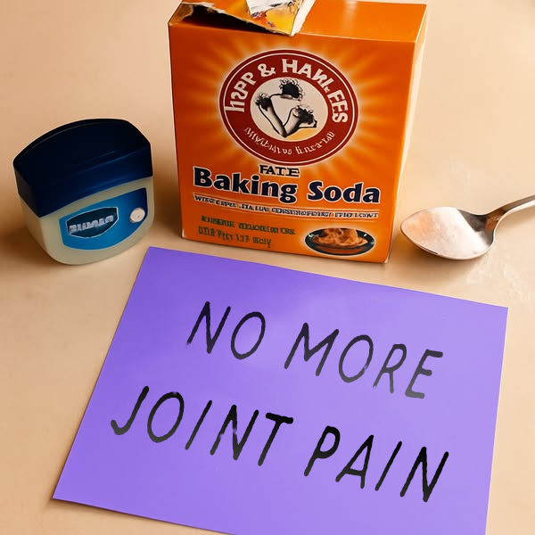

My leak anxiety started small… I'd leak a little when I laughed too hard, or had to plan my shopping trips around the nearest washroom.
At first, I brushed it off as a normal part of ageing. But then I started avoiding my weekly catch-ups with friends… always wearing dark pants "just in case"… and that's when I knew this was stealing my life.
I tried every medication my doctor prescribed, endless pelvic floor exercises, and spent a fortune on pads and liners, but none of them made a difference.
The embarrassment never lifted. Every cough felt like a risk. I couldn't even trust myself on a long car ride, and whenever I wanted to play with the grandkids, I'd hold back… just in case.
The hardest part? My family noticed. They never said it out loud, but I saw the look on my daughter's face… they stopped asking me to babysit the grandkids overnight.
I tried special diets, uncomfortable procedures, weekly specialist visits… but nothing helped. The only thing that changed was the name on my prescription—and the price going up every time.
I was losing hope. When I refused another useless prescription, they hit me with the ultimate scare tactic: "If this keeps up with the recurring infections, you'll need assisted living—and that's not cheap."
I was at my lowest when an old friend from university reached out.
We caught up, and after hearing what I'd been through, she told me something that floored me: the pills and pads I was wasting my money on are designed to manage the problem, not solve it. They're part of a billion-dollar industry that profits from my suffering.
I thought I was the only one failing… but I wasn't.
Then she sent me a short video. It was from one of Canada's leading medical researchers. It explained the real root cause of my weakened bladder—a hidden mineral deficiency my family doctor never even mentioned—and revealed a simple at-home method I could start using immediately.

I tried it that day… and everything changed.
No more expensive pads. No more uncomfortable procedures or side effects from pills. I didn't have to give up my morning coffee.
Within days, the difference was unbelievable. I stopped mapping out washrooms everywhere I went. I could get through a whole night without waking up. Conversations became confident again—I wasn't constantly worried about a sudden cough or sneeze.
And the best part? I picked up my granddaughter the other day and swung her around, laughing, without a single moment of panic. It feels like I've gotten my life back.
I can't thank my friend—or the researcher who uncovered this—enough. It truly felt like an answered prayer. 🙏
What the Canadian Research Revealed
"This breakthrough discovery from the University of Toronto's urology research division addresses the root cause of bladder weakness that most doctors overlook—a critical mineral deficiency affecting pelvic floor muscle function. Unlike medications that only mask symptoms, this method restores natural bladder control by correcting the underlying nutritional imbalance."
According to the research team at the University of Toronto, over 73% of women over 40 suffer from some form of bladder weakness, yet most are never told about the simple mineral deficiency that's causing it.
The study, published in the Canadian Medical Association Journal, found that a specific combination of minerals—when properly absorbed—can strengthen the pelvic floor muscles and restore bladder control naturally, without surgery or expensive medications.
Why Traditional Methods Fail
Most treatments you've probably tried focus on managing symptoms, not fixing the cause:
- Pads and liners: They catch leaks but don't stop them. You're still living in fear.
- Pelvic floor exercises: Helpful, but incomplete. Without the right minerals, your muscles can't fully recover.
- Prescription medications: Often cause side effects like dry mouth, constipation, or dizziness. And they're expensive.
- Surgical procedures: Invasive, costly, and not always effective. Plus, recovery time can be months.
How This Canadian Method Works
The breakthrough comes from understanding that bladder control depends on strong pelvic floor muscles, and these muscles need specific minerals to function properly. When you're deficient in these minerals—which most people over 40 are—your muscles weaken, leading to leaks.
🎯 Addresses Root Cause
Unlike medications that mask symptoms, this method corrects the mineral deficiency that weakens your pelvic floor muscles.
⚡ Works in Days, Not Months
Many women report improvement within 3-7 days. No waiting weeks or months to see results.
💊 No Pills, No Side Effects
This is a simple dietary adjustment method. No medications, no chemicals, no risk of side effects.
🏠 Do It at Home, Privately
Everything can be done in the privacy of your own home. No doctor visits, no embarrassing procedures.
💰 Saves Money Long-Term
No more expensive pads, medications, or procedures. This is a one-time solution that works for life.
✅ Scientifically Backed
Based on peer-reviewed research from one of Canada's top medical universities. Not a fad or trend.
Real Stories from Women Who Tried It
"I suffered with leaks for 8 years. I tried everything—pads, exercises, medications. Nothing worked. After just 5 days of following this method, I noticed I wasn't leaking when I laughed anymore. By week 2, I could go through a whole day without even thinking about it. It's been 6 months now, and I feel like I'm 30 again."
"The embarrassment was the worst part. I stopped going to yoga class, avoided long car trips, always wore dark pants. My daughter noticed and it broke my heart. This method changed everything. I can play with my grandkids without worry, go on road trips, and I'm back at yoga. My confidence is back."
"I was spending $80 a month on pads and liners. My doctor kept prescribing new medications, each one more expensive than the last. When I found this method, I was skeptical—but desperate. Within a week, I stopped needing pads. It's been 4 months and I haven't bought a single pad. This saved me money and my dignity."
"After my third child, my bladder control was terrible. I thought it was just something I had to live with. My doctor suggested surgery, but I was terrified. This method was so simple—just a few dietary changes—and it worked. No surgery, no medications, just natural healing. I wish I'd known about this years ago."
Why This Method Is Different
Unlike other treatments that require ongoing purchases or repeated doctor visits, this method teaches you how to correct the mineral deficiency naturally. Once you learn it, you can maintain your results for life.
The key difference: This isn't a product you buy repeatedly. It's knowledge—a simple method you learn once and use forever. That's why the medical industry doesn't promote it. They can't profit from it.
What You'll Learn in the Video
- The specific mineral deficiency affecting 73% of women over 40
- Why your doctor likely never mentioned it (and why that matters)
- The exact foods and timing that restore mineral balance
- How to strengthen your pelvic floor muscles naturally
- A simple 5-minute daily routine that makes all the difference
- How to maintain results long-term without ongoing costs
🛡️ 30-Day Money-Back Guarantee
We're so confident this method will work for you that we offer a full 30-day money-back guarantee.
If you don't see improvement in your bladder control, or if you're not completely satisfied for any reason, simply contact us within 30 days and we'll refund every penny—no questions asked.
You have nothing to lose and everything to gain.
⏰ Limited Access: This video may be removed due to pressure from pharmaceutical companies. Secure your access now before it's taken down.
If you're tired of leaks and pads controlling your life, don't wait until it gets worse.
Tap "Learn More" now and see how it works before it disappears.